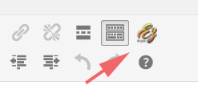
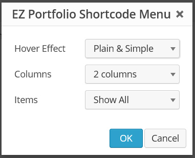

Email: support at w-labs.net
Thank you for purchasing EZ Portfolio WordPress plugin. If you have any questions that are beyond the scope of this help file, please feel free to email at: support (at) w-labs (dot) net.
To install EZ-Portfolio, login to your WordPress dashboard and choose Plugins - Add New.
After this, choose Upload and locate the EZ Portfolio plugin installation package from your computer. After this click Install Now buton. After installation, activate the plugin.
After installation go to: Settings - EZ Portfolio Settings, and hit the save button once. This will write all the information to database, and is required to make plugin to work properly.
From your WordPress Dashboard menu, choose Settings - EZ Portfolio Settings. From here you can change the different options for different effects. You can either use built-in color schemes, or use your own.
If you want to use EZ Portfolio only as gallery, you can choose Disable Portfolio details On/Off: On at the bottom of the settings page.
You can place EZ Portfolio to any page you like, just by clicking the EZ icon on the page editor:
This will open the shortcode editor, where you have different options on how you want to display your portfolio. You can choose the effect, columns and how many items you want to show.
Also if you wish to use video on your portfolio, you can find a metabox under the post editor, where you can put the video url.
Use settings page located at the: Settings - EZ Portfolio Settings to change the portfolio settings.
To make a layout page for your single portfolio item, you need to create a file "single-ez_portfolio.php" in your themes root folder. You can use your themes single.php file as a reference when designing an item page for your theme.
If you are getting 404 error messages while entering to single item, go to Settings - Permalinks and hit Save button once.
If you have any issues, please contact at: support@w-labs.net
W-Labs